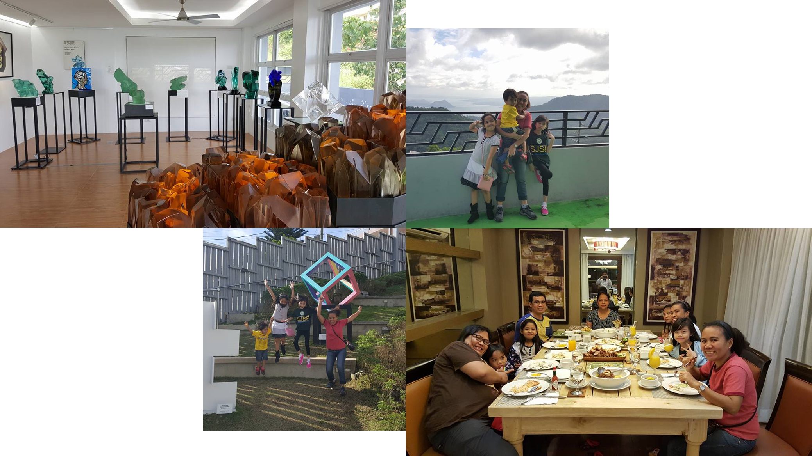

Fire can occur anywhere at any time. We must be ready and aware of what to do in case fire is in the building and prevent it from spreading at any moment. Here are some ways to prevent a fire.
| 6 Ways to Prevent a Fire | |
|---|---|
1. Have an escape plan in case of fire.

|
2. Make sure to have a fire extinguisher at home.

|
|
3. Keep flammable objects away from fire and kids.

|
4. Extinguish fires from candles after use.
|
|
5. Turn off your kitchen appliances after using.
|
6. Unplug your appliances when not in use.
|